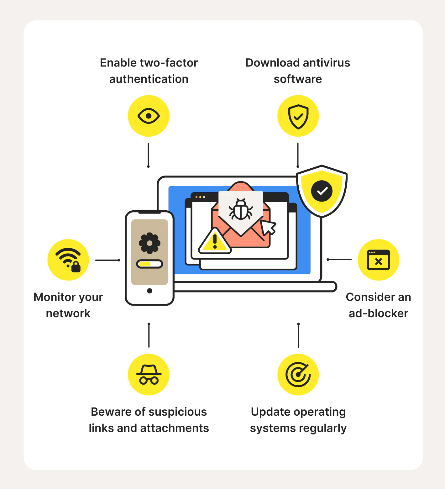

Protection from Malware
Preventing and mitigating malware attacks is crucial to ensure the safety of your computer system, network, or device. The following are some tips and best practices to protect against malware attacks:
- Keep software up-to-date: Ensure that your operating system, software, and applications are up-to-date with the latest security patches and updates. This will help protect against known vulnerabilities and exploits.
- Use strong passwords: Use strong, unique passwords for all your accounts and avoid reusing them. Consider using a password manager to generate and store passwords securely.
- Use two-factor authentication: This can help prevent malicious attackers logging in if a password is leaked. The password alone would be useless because they would need your phone
- Avoid suspicious downloads and emails: Be cautious when downloading files or clicking on links from untrusted sources. Avoid opening suspicious emails or attachments, and be wary of unsolicited messages or requests.
- Backup important files regularly: Regularly backup important files to an external hard drive or cloud storage. This will help mitigate the damage caused by a malware infection, as you can restore your files to a previous version.
- Use anti-malware and anti-virus software: Use reputable anti-malware and anti-virus software to protect against malware attacks. Ensure that the software is updated regularly and configured to perform automatic scans.
- Be cautious with public unsecured Wi-Fi: Avoid using public Wi-Fi networks for sensitive activities, such as online banking or shopping. If you must use public Wi-Fi, use a virtual private network (VPN) to encrypt your connection.
By following these best practices, you can help prevent malware attacks and protect your computer system, network, or device. In the event of a malware infection, regular backups and anti-malware software can help mitigate the damage caused and aid in the recovery process.
|

|